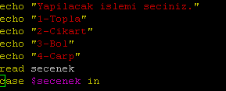
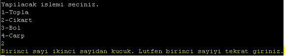

Merhaba bir sayılık aradan sonra Bash yazı diziminizin 5. bölümüyle bu sayımızda devam ediyoruz. Hatırlayacağınız üzre baştan başlayıp temel konulara değinerek birçok başlığı işlediğimiz küçük bir uygulama oluşturmaya çalışıyoruz.
Bu uygulama her yazı dizimiz sonucunda yeni özellik bir kazanıyor veya yaptığı işlemi daha kısayoldan yapıyor. Şimdiye kadarki ilerleme şeklimiz ve durumumuz için önceki sayılarımıza bakabilirsiniz.
Giriş mahiyetinde bakacak olursak bir klasör ve dosya oluşturup yaptığımız matematiksel işlemi bu dosya ve klasöre kaydeden bir uygulama yaptık şimdiye kadar. İf kontrolleri kullandık. GoTo deyimini kullanıp ardından bunu döngüye çevirdik. Fonksiyon kullanıp kaldırdık.
Bu sayımızda da uygulamamıza, temel matematik işlemlerini seçimimize bağlı olarak yaptıracağız. Uygulama sadece çıkartma işlemi yapıyordu. Şimdi uygulama bizden yine sayıları isteyecek ve ardından yapacağımız işlemi bize seçtirip sonucunu verecek. Bunu Case-Esac kalıbını kullanarak yapacağız.
Ayrıca dergi okurlarımızdan forum isimleri jayw ve monthy_python arkadaşlarımızın ricası üzerine kodları text biçiminde yazımızda kullanacağız. Umarız sizin için kolaylık olur.
Dergimize göstermiş olduğunuz ilgiden dolayı çok teşekkür ederiz.
Başlıyoruz;
Case-Esac Kalıbı: Bir işlem için birden fazla seçeneğin olduğu durumlarda kullanılır. Bir menü tasarımı yapılıp kullanıcıya bu menüden işlem seçimi yaptırılabilir.
Şimdi uygulamamızın son hâlini hatırlayalım.

Burada while döngüsünü girilen sayıların büyük/küçük karşılaştırmasını yapıyoruz. Bu kontrolü temel matematik işlemlerinde sadece çıkartmada kullanacağız. Bu kontolü yapıp ardından typeset -i sonuc ile başlayan işlemimizle çıkartma işlemini yapıyoruz.
Şimdi bu araya Case-Esac kalıbıyla bir ekleme yapıp istediğimiz işlemi yapıp sonucunu alacağız.
While döngüsünden önceki birinci ve ikinci sayıyı aldığımız kodun arkasına işlemler için seçim menüsünü oluşturalım.

Burada ekrana “Yapılacak islemi seciniz” mesajıyla beraber 1, 2, 3, 4 şeklinde maddelendirerek “secenek “ değişkenimize atayacağımız işlemin seçimini yansıtıyoruz.
Daha sonra ekrana yansıyan 4 maddeden herhangi birinin seçilmesi ile yapılacak işlemleri belirtiyoruz.

Gördüğümüz gibi 1), 2), 3), 4) şeklinde sonları ;; ile biten kodlar girdik.
1) alanında typeset -i ile başlayan kodumuzla direkt girilen 2 sayıyı toplayıp sonucu klasör ve dosyaya yazıyoruz. Burada toplama işlemi yaptığımız için sayılara büyük/küçük karşılaştırması yapmadık.
2) alanında ise çıkartma işlemi yapıyoruz. Eksi sonuç vermemesi için while [ $sayı1 -lt $sayi2 ] do döngümüz ile girilen sayılara büyük/küçük karşılaştırması yapıyoruz.
Not:-Siz de diğer işlemler için buna benzer kontroller yapabilirsiniz.- 52. sayımızdaki yazıda -lt, gt ve diğer aritmetik karşılaştırmaları belirtmiştik.
3) ve 4) alanlarında da herhangi bir kontrol yapmadan işlemi yapıp kaydı gerçekleştiriyoruz.
Şimdi uygulamayı çalıştırıp kullanalım. Sarı renkli satırlarda göreceğiniz gibi Case-Esac kalıbı sayıları aldıktan sonra bize seçim menüsünü çıkartıyor. Biz de bu ekranda 1 numaralı seçimi yapıp toplama işlemini yaptırıyoruz.

Bir de çıkartma işlemine koyduğumuz kontrolün çalışıp çalışmadığına bakalım.

Uygulamayı tekrar çalıştırıp aynı sayılarla bu çıkartma işlemini seçtiğimizde karşılaştırma yapılıp eksi sonuç vermemesi için uygulama, sayıyı bizden tekrar istiyor.
Böylece Case-Esac kalıbını da kullanmış olduk. Daha çeşitli ve karmaşık kullanımlar için sizler de denemeler yapabilirsiniz. Daha önce de söylediğimiz gibi bizimle de paylaşabilirsiniz.
Uygulamamızın kodları aşağıdadır.
Görüşmek üzere,
#!/bin/bash
echo "Lutfen birinci klasorun ismini giriniz."
read klasor1
echo "Lutfen ikinci klasorun ismini giriniz."
read klasor2
mkdir $klasor1
mkdir $klasor2
echo $klasor1 " ve " $klasor2 " isiminde klasorler olusturuldu. "
echo "Lutfen olusturulacak dosyanin ismini giriniz."
read dosya1
touch $klasor1/$dosya1
echo $dosya1 " isimli dosya olusturuldu."
echo "Lutfen birinci sayiyi giriniz."
read sayi1
echo "Lutfen ikinci sayiyi giriniz."
read sayi2
echo "Yapilacak islemi seciniz."
echo "1-Topla"
echo "2-Cikart"
echo "3-Bol"
echo "4-Carp"
read secenek
case $secenek in
1)typeset -i sonuc
sonuc=$sayi1+$sayi2
echo $sonuc > $klasor1/$dosya1
echo "Islemin sonucu:" $sonuc " Dosya yolu:" $klasor1/$dosya1;;
2)while [ $sayi1 -lt $sayi2 ];
do
echo "Birinci sayi ikinci sayidan kucuk. Lutfen birinci sayiyi tekrat giriniz."
read sayi1
echo "Lutfen ikinci sayiyi giriniz."
read sayi2
done
typeset -i sonuc
sonuc=$sayi1-$sayi2
echo $sonuc > $klasor1/$dosya1
echo "Islemin sonucu:" $sonuc " Dosya yolu:" $klasor1/$dosya1;;
3)typeset -i sonuc
sonuc=$sayi1/$sayi2
echo $sonuc > $klasor1/$dosya1
echo "Islemin sonucu:" $sonuc " Dosya yolu:" $klasor1/$dosya1;;
4)typeset -i sonuc
sonuc=$sayi1*$sayi2
echo $sonuc > $klasor1/$dosya1
echo "Islemin sonucu:" $sonuc " Dosya yolu:" $klasor1/$dosya1;;
esac